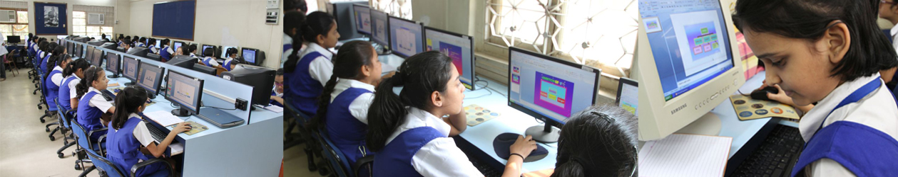

Education
Computers are used in schools for learning subjects like math, reading, and science. They also help students with research and projects.
Entertainment
We can use computers to play games, watch movies, and listen to music.

Communication
Computers help us stay connected with friends and family through emails, video calls, and social media.